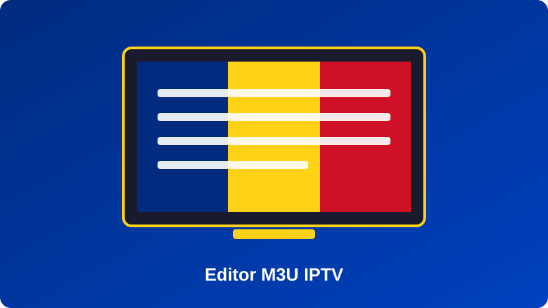
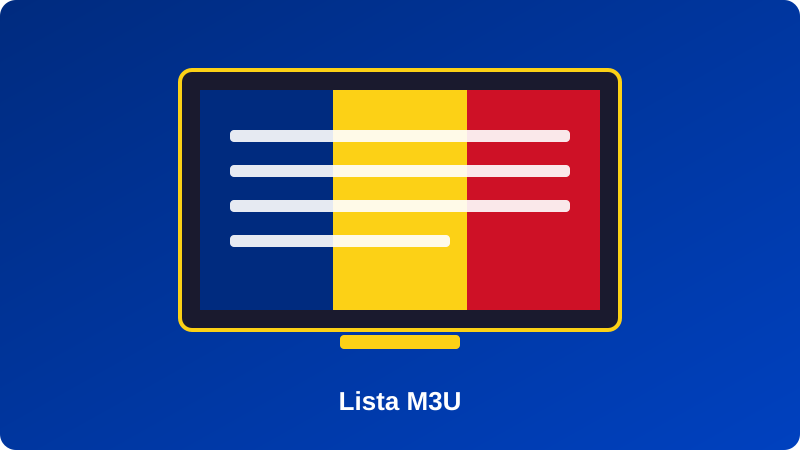

Daca ai o lista cu mii de canale si nu mai gasesti nimic in ea, probabil cauti un editor m3u iptv. Este unealta care transforma un fisier haotic intr-o lista ordonata, cu canalele romanesti la inceput, logo-uri frumoase si grupuri clare. Multi utilizatori primesc de la furnizor o lista uriasa si o folosesc asa cum este, apoi se plang ca derularea dureaza si ca televizorul pare nesfarsit.
In acest ghid afli ce este un editor m3u, ce tipuri exista, cum editezi pas cu pas o lista, cum cureti duplicatele si fluxurile moarte si ce greseli sa eviti. Vedem si cum arata o lista potrivita pentru diaspora si cand merita sa renunti la editare in favoarea unui abonament cu lista deja pregatita de la Romania IPTV.
Articolul se potriveste atat incepatorilor, cat si celor care folosesc deja playere pe Android TV, Firestick sau computer. Daca vrei sa afli mai intai ce este un serviciu de televiziune prin internet, citeste ghidul despre iptv romania; pentru instalarea playerelor vezi si Dragon IPTV: Ce Este si Cum Il Folosesti in Romania.

Cuprins
- Ce este un editor M3U IPTV si de ce ai nevoie de el
- Tipuri de editor M3U IPTV: desktop, online si pe telefon
- Cum editezi o lista M3U pas cu pas
- Curatarea listei: duplicate, canale moarte si ordine
- Cele mai frecvente erori cand folosesti un editor M3U IPTV
- Legalitate si siguranta: ce poti edita si ce nu
- Editor M3U IPTV pentru diaspora: canale romanesti oriunde
- Alternativa: abonament cu lista deja curatata
- Intrebari frecvente
- Concluzie
Ce este un editor M3U IPTV si de ce ai nevoie de el
Un fisier M3U este o lista text simpla care spune playerului unde gaseste fiecare canal. Fiecare intrare contine numele canalului, logo-ul, grupul si adresa fluxului. Un editor m3u iptv este programul sau aplicatia online cu care deschizi aceasta lista si o modifici fara sa o strici: stergi canalele moarte, redenumesti posturile, muti canalele romanesti in capul listei si adaugi logo-uri corecte.
Fara un editor, lista ajunge repede un haos. Ai canale duplicate, grupuri numite in zece feluri si zeci de posturi straine pe care nu le deschizi niciodata. Cand vrei sa gasesti Pro TV sau Antena 1, deruleaza minute intregi. Un editor m3u rezolva asta in cateva minute si face televiziunea mai placuta, mai ales pe telecomanda.
Structura unei liste M3U
Fisierul incepe cu linia #EXTM3U. Apoi urmeaza perechi de linii: una care incepe cu #EXTINF (cu atributele tvg-id, tvg-logo, group-title) si una cu adresa fluxului. Orice editor m3u iptv serios respecta aceasta structura si nu rupe perechile.
Cine are nevoie de un editor
Il folosesc cei care au o lista mare de la un furnizor, cei care vor sa pastreze doar canalele romanesti si diaspora care vrea o lista curata pe televizorul din sufragerie. Pentru ei, un editor este diferenta intre o lista utila si una frustranta.
Tipuri de editor M3U IPTV: desktop, online si pe telefon
Exista trei categorii mari de unelte, iar alegerea depinde de cat de mare este lista si de cat de des o modifici.
Editoare de text simple
Notepad++, VS Code sau chiar Notepad pot deschide un fisier M3U. Sunt gratuite si rapide, iar cu functia de cautare si inlocuire poti schimba un grup intreg dintr-o singura miscare. Sunt potrivite pentru liste mici, sub cateva sute de canale. Atentie la codare: salveaza mereu in UTF-8, altfel diacriticele din numele canalelor apar stricate.
Programe dedicate pentru liste
Aplicatiile construite special ca editor m3u iptv afiseaza lista ca tabel: coloane pentru nume, grup, logo si URL. Poti sorta, filtra, trage canalele cu mouse-ul si verifica automat daca fluxurile raspund. Pentru liste de mii de canale, aceasta varianta este cea mai comoda.
Editoare online si aplicatii mobile
Un editor m3u online nu cere instalare. Incarci fisierul, il modifici si descarci rezultatul. Ai grija insa: nu incarca liste care contin datele tale de autentificare pe site-uri necunoscute, pentru ca linkul poate include utilizatorul si parola. Pe telefon exista aplicatii care editeaza lista direct, dar ecranul mic face munca mai lenta.
Cum editezi o lista M3U pas cu pas
Procesul este acelasi, indiferent de program. Respecta ordinea de mai jos si vei evita cele mai multe erori.
1. Fa o copie de siguranta
Inainte sa atingi ceva, salveaza fisierul original sub alt nume. Daca ceva nu merge, revii in cateva secunde. Este regula numarul unu cand folosesti orice editor m3u iptv.
2. Deschide lista si verifica structura
Incarca fisierul in editor si cauta prima linie #EXTM3U. Daca lipseste, unele playere refuza lista. Verifica si ca fiecare canal are exact doua linii, fara randuri goale intre ele.
3. Pastreaza doar canalele de care ai nevoie
Filtreaza dupa grup sau dupa cuvinte-cheie precum "RO", "Romania" ori numele posturilor. Sterge restul. O lista de 300 de canale utile bate oricand una de 8000 in care te pierzi.
4. Redenumeste si grupeaza
Uniformizeaza numele: "PRO TV HD", nu "ProTV RO FHD [vip]". Creeaza grupuri clare, de exemplu Generale, Stiri, Sport, Filme, Copii si Muzica. Grupurile bine denumite fac navigarea pe Smart TV mult mai rapida.
5. Adauga logo-uri si identificatori EPG
Atributul tvg-logo afiseaza sigla canalului, iar tvg-id leaga canalul de ghidul de programe. Fara potrivire corecta, ghidul ramane gol. Detalii despre EPG gasesti si in ghidul nostru despre Download IPTV: Ghid Sigur pentru Canale Romanesti 2026.
6. Salveaza si testeaza
Salveaza in UTF-8, incarca lista in player si deschide cateva canale din fiecare grup. Daca un canal nu porneste, verifica daca nu ai sters din greseala un caracter din adresa.
Curatarea listei: duplicate, canale moarte si ordine
Dupa luni de utilizare, orice lista acumuleaza gunoi. Un bun editor m3u te ajuta sa il scoti rapid.
Elimina duplicatele
Sorteaza dupa nume si cauta intrarile care se repeta. Pastreaza varianta HD sau cea cu fluxul cel mai stabil. Multe programe detecteaza automat duplicatele dupa URL sau dupa tvg-id.
Testeaza fluxurile
Functia de verificare trimite o cerere catre fiecare adresa si marcheaza canalele care nu raspund. Ruleaz-o seara, cand reteaua este incarcata, ca sa vezi starea reala. Un canal care merge doar dimineata nu este un canal bun.
Ordoneaza canalele romanesti primele
Muta posturile nationale in varf: Pro TV, Antena 1, Kanal D, Prima TV, TVR 1, Digi 24, Realitatea Plus. Apoi urmeaza sportul si filmele. Pentru o imagine completa a ofertei vezi pagina de canale.
| Operatie | Timp estimat | Beneficiu |
|---|---|---|
| Stergere grupuri straine | 5 minute | Lista mai scurta |
| Eliminare duplicate | 3 minute | Fara canale repetate |
| Redenumire canale | 10 minute | Navigare clara |
| Potrivire EPG | 10 minute | Ghid complet |

Cele mai frecvente erori cand folosesti un editor M3U IPTV
Cele mai multe probleme apar din graba. Iata ce merita evitat.
Canale care nu mai pornesc dupa editare
De obicei ai sters sau ai modificat o adresa. Revino la copia de siguranta si compara fisierele. Un caracter lipsa dintr-un link este suficient ca fluxul sa nu mai mearga.
Diacritice stricate
Apare cand salvezi in alta codare decat UTF-8. Reseteaza codarea in setarile editorului si salveaza din nou.
Lista nu se mai incarca in player
Verifica daca prima linie este #EXTM3U, daca nu exista linii goale in mijloc si daca fisierul are extensia .m3u sau .m3u8.
Legalitate si siguranta: ce poti edita si ce nu
Editarea unei liste este o operatiune tehnica, similara cu organizarea contactelor din telefon. Un editor m3u iptv nu este ilegal in sine. Legalitatea tine de continutul din lista: foloseste surse pe care ai dreptul sa le vezi, cum sunt canalele din abonamentul unui furnizor autorizat sau fluxurile oficiale gratuite.
Liste gratuite gasite pe internet
Listele publice sunt instabile, se strica la cateva zile si pot trimite catre continut nesigur. Mai mult, multe sunt rapid blocate. Daca vrei stabilitate, un abonament de la un furnizor serios costa putin si te scuteste de editari zilnice. Compara si cu alte piete: ghidurile pentru greek iptv sau tilaa iptv arata aceleasi probleme ale listelor gratuite.
Protejeaza-ti datele
Nu partaja fisierele si foloseste doar programe descarcate din surse oficiale. Aplicatiile modificate pot contine reclame agresive sau cod nedorit.
Editor M3U IPTV pentru diaspora: canale romanesti oriunde
Romanii din Italia, Spania, Germania, Belgia sau Marea Britanie vor aceleasi lucruri: stiri de acasa, emisiuni, filme si fotbal in limba romana. Pentru ei, lista curata este esentiala, pentru ca nu vor sa caute printre canale italiene, arabe sau spaniole. Un editor m3u iptv le permite sa isi creeze o lista personala, doar cu posturi romanesti.
Idei de grupuri pentru familie
- Generale: Pro TV, Antena 1, Kanal D, Prima TV, TVR 1.
- Stiri: Digi 24, Antena 3 CNN, Realitatea Plus, B1 TV.
- Sport: Digi Sport, Prima Sport, Orange Sport.
- Copii: canale cu desene dublate in romana.
- Muzica: Kiss TV, Utv, Etno TV.
Viteza necesara in strainatate
Pentru HD ai nevoie de circa 10 Mbps, iar pentru 4K de aproximativ 25 Mbps per ecran. Mai multe detalii despre acest tip de serviciu gasesti in articolul despre iptv romania si in ghidul iptv romania diaspora.
Alternativa: abonament cu lista deja curatata
Daca nu vrei sa pierzi timp cu editarea, exista o solutie mai simpla. Un furnizor ca Romania IPTV ofera lista gata organizata, cu canale romanesti grupate logic, ghid EPG functional si logo-uri corecte. Nu mai ai nevoie de un editor m3u iptv, pentru ca lista este intretinuta de echipa: canalele moarte sunt inlocuite, iar noutatile apar automat.
Ce primesti
- Canale romanesti in HD si 4K, stabile seara si in weekend.
- Functioneaza pe Smart TV, Android TV box, Firestick, telefon si computer.
- Test gratuit, fara card si fara contract.
- Suport in limba romana pe WhatsApp.
Daca vrei totusi sa editezi, poti oricum sa pastrezi lista primita si sa aplici modificari personale. Romania IPTV iti ramane la dispozitie pentru orice problema de configurare. Mai multe pagini utile: intrebari frecvente si tutorial de instalare.
Intrebari frecvente despre editor m3u iptv
Ce este un editor m3u iptv?
Este un program sau o unealta online cu care deschizi un fisier M3U si modifici canalele: le stergi, le redenumesti, le grupezi si adaugi logo-uri, fara sa strici structura listei.
Care este cel mai bun editor m3u iptv gratuit?
Pentru liste mici merge Notepad++ sau VS Code. Pentru liste mari, un program dedicat cu vizualizare de tabel este mai comod. Alege mereu unelte descarcate din surse oficiale.
Pot edita lista M3U direct pe telefon?
Da, exista aplicatii pentru Android care editeaza liste M3U, dar pe un calculator munca merge mult mai repede si cu mai putine greseli.
De ce nu mai functioneaza lista dupa ce am editat-o?
De obicei lipseste linia #EXTM3U, ai sters o adresa sau ai salvat in alta codare. Reia de la copia de siguranta si compara fisierele.
Cum adaug logo-uri si ghid EPG?
Foloseste atributele tvg-logo si tvg-id in linia #EXTINF. Identificatorul trebuie sa corespunda cu cel din sursa EPG, altfel ghidul ramane gol.
Este legal sa folosesc un editor M3U?
Editorul este doar o unealta. Legalitatea depinde de continutul listei, deci foloseste surse autorizate si abonamente de la furnizori care au drepturi de difuzare.
Pot sa primesc o lista M3U gata curatata cu canale romanesti?
Da. Romania IPTV ofera liste organizate pentru canale romanesti, cu ghid EPG. Scrie-ne pe WhatsApp si primesti un test gratuit.
Ce viteza de internet imi trebuie?
Aproximativ 10 Mbps pentru HD si 25 Mbps pentru 4K per ecran. La mai multe ecrane simultan, aduna cerintele.
Vrei o lista romaneasca gata curatata?
Scrie-ne pe WhatsApp si primesti acces de test, fara card si fara contract.
Cere testul pe WhatsAppConcluzie
Pe scurt, un editor m3u iptv te ajuta sa iti faci lista de canale utila: o copie de siguranta, filtrare dupa grupuri, redenumire, curatare de duplicate si test al fluxurilor. Cu cateva minute de munca, schimbi complet experienta pe televizor. Respecta structura fisierului, salveaza in UTF-8 si nu partaja linkurile care contin datele contului.
Si daca nu vrei sa editezi nimic, scrie-ne pe WhatsApp si porneste-ti televizorul cu Romania IPTV, cu lista romaneasca gata organizata.